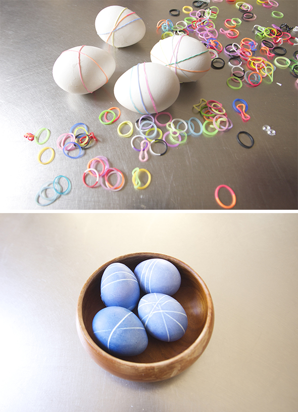

What can we do with the loom rubber bands for eastern? we put them around eggs before dyeing them and afterwards you just remove them.
Que se puede hacer en semana santa son las gomas? Nosotros los hemos puesto alrededor de huevos antes de teñir les y luego los hemos quitado.
Was kann man zu Ostern mit den Loom Bands machen? Wir haben sie um Eier gewickelt, bevor wir diese gefärbt haben. Danach einfach entfernen.
